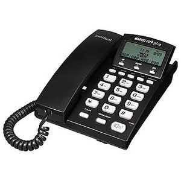
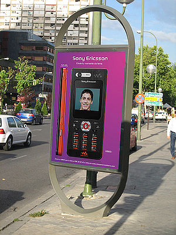

Teléfono móvil
 De: La Frikipedia, la enciclopedia extremadamente seria.
De: La Frikipedia, la enciclopedia extremadamente seria.
| De la serie Aparatejos y gadgets inútiles:
|
| Telefono Movil (Celular)
|
|
|
| Sirve para:
|
Hablar como un inutil en todas partes
|
| Empresa desarrolladora:
|
Motorola
|
| Año de invención:
|
En los 80
|
| Empresas que lo fabrican:
|
Nokia,Motorola,Blackberry y otros tantos.
|
| Nivel de maldad:
|
no es malo,pero suelta radiación que puede matarte
|
Tiempo o vida inútil:
|
2 años,si no se te cae al agua
|
| ¿Se aconseja usarla?
|
Si vas conduciendo o en un barrio pobre,ni lo saques
|
| ¿Se recomienda el boicot o uso de alternativas?
|
Si encuentras forma
|
| Cantidad de llamadas al servicio al cliente:
|
No han terminado de contarlas
|
Los móviles son objetos paganos mediante los cuales los chinos se ponían en contacto en los años de la uva. El término móvil hace referencia a que se está intentando tener una casa móvil en tu móvil, valga la redundancia móvil. Así, ahora hay móviles que te hacen la cena, te lavan los cojones y te buscan novia.
El teléfono también es un elemento que causa muchos problemas, ya sea familiares, laborales y sobre todo económicos. Hay muchos tipos de teléfonos, aunque los mas comunes son los que están atados a la mesa, los que clavan en las veredas y los que están pegados en manos de chicas adolescentes en busca de novio.
Historia
Los móviles nacen mucho después del caramelo con palo Shupachups®. Al principio sólo los poseían los yupis de estos con traje como Bill Clinton y familia y tenían un tamaño al que solemos denominar "ladrillo". Actualmente lo tienen los perros, gatos, delfines y algunos tipos de bacterias. Se cree que fueron los causantes de la muerte de Graham Bell, que se murió del disgusto al ver en qué había degenerado su invento.
 Teléfono de movilidad limitada (hasta donde llegue el cable).
Tipos
Hay dos clases de teléfonos móviles, los que son inalámbricos y los llamados móviles.
Los inalámbricos son para los que les gusta caminar por todos lados mientras hablan o también, para llevarlo a todos lados (dentro de la casa) y no tener que salir corriendo a atender cada vez que suena.
Los móviles son los que se llevan en el bolsillo (y se caen en el retrete) y que sirven para llamar desde cualquier lado del mundo hasta otro sitio (muchos lugares no tienen señal, así que es mentira que sirve para todo el mundo) y que, generalmente se caracterizan en que cada vez que uno lo quiere usar, no funciona por diversos motivos.
Usos del teléfono
El teléfono tiene cientos de utilidades pero, a decir verdad, a nadie le importa, así que listaremos las más utilizadas.

Skinner no usa el móvil para cocinar.
Bart Simpson usa el móvil para hacer bromas a todo el mundo
- Cocinar: Utilizado por hombres solteros que no viven con su madre. Sólo hay que marcar algunos números y ya tienes a alguien cocinando por ti que además te lo envía a domicilio (requiere de imanes pegados en la puerta de la heladera con el número de teléfono del delivery).
- Control parental: Esto se aplica a esos teléfonos pequeños que se llevan en el bolsillo, los cuales te hacen
esclavo localizable y te vuelven gilipollas fácil de controlar, ya que si sales a algún lado siempre te fastidiarán tus padres (o tu novia) con preguntas como "¿Dónde andas?" o "¿A qué hora llegas?".
- Cabrearte: Siempre que estés durmiendo o viendo televisión el teléfono sonará (Ley de Murphy), logrando que te desveles o que te pierdas el final de la película.
- Bromas o equivocados: Al igual que en la característica anterior, esto cabrean bastante, pero es peor ya que no hay interés alguno en hablar contigo, sólo hacerte una broma o simplemente te llaman porque no saben marcar los números, y sueltan un: -¿Eres María Polla? o -¿Telepisha?
- Autosatisfacción sexual: Característica que sólo ofrecen los móviles con vibración. Simplemente lo configuras para que vibre en llamadas, lo insertas en el orificio de salida del sistema digestivo y luego marcas el número del móvil. Se recomienda lavar con abundante alcohol antes y después de usarlo (por eso de la sífilis y otras yerbas).
- Facilitar la
incomunicación: Ya que siempre que llames a alguien te responderá una grabación diciendo que el número solicitado se encuentra fuera del área de cobertura (o te encuentras tú fuera del área, o la batería no tiene carga, o no tienes saldo, o no tienes móvil). Y si se te ocurre enviar un SMS, es seguro que el receptor no lo entenderá (a menos que te lo envíes a ti mismo) y te llamará para preguntarte qué has querido decirle pero le responderá la grabación antes mencionada. También puede ocurrir que escribas el argumento de una novela y al momento de enviarlo te encuentres con que estás fuera del área de cobertura, o se te agote la batería y se apague el teléfono antes de enviarlo, o no tienes saldo, o no tienes móvil y has escrito el SMS utilizando una máquina de escribir.
- Cosas importantes: Además de todo lo mencionado y algunas gilipolleces más, el teléfono sirve para hacer llamadas importantes, pero que nadie hace (ya sabes, porque te encuentras fuera del área de cobertura, o la batería no tiene carga, o no tienes saldo, o no tienes móvil, o no lo has podido extraer del orificio de salida del sistema digestivo). El motivo puede ser pedir ayuda a la Policía, a los Bomberos, a tu novio/a, o al Automóvil Club porque se te ha quedado el coche en medio del desierto o en una zona peligrosa.
- Hacer palomitas: coloca alrededor de unas cuantas palomitas sin hacer 4 o 5 moviles y ponlos en vibración. Llamalos a todos a la vez y tendrás palomitas
radioactivas hechas.
- Hacerse la vasectomía: ponte un par de moviles en los bolsillos de tu pantalón cercanos a la entrepierna(encendidos, claro) y espera unas horas. Haz eso durante una semana y tendrás tu vasectomía de forma indolora. Si no, obtendras un cancer de testículos, que para el caso es lo mismo.
A favor
El teléfono es realmente útil a la hora de no querer moverse de casa para hablar con alguien o si simplemente no tienes pasta como para llegar al lugar donde se encuentra ese con el que quieres hablar.
- Distancias: No hay mucho que explicar, solo que si una persona vive a 7000 años luz de tu casa es mucho más fácil llamarla por teléfono que ir a hablarle. Importante: la distancia de la llamada es directamente proporcional al tamaño de tu factura telefónica.
Típica batería de un teléfono móvil.
En contra
Generalmente a la hora en la que uno precisa hacer una llamada importante, el puto teléfono no funciona.
- Batería: Siempre, pero siempre que quieras usar el móvil desde la calle, el maldito va a estar apagado o sin señal, eso es una ley así que no intentes violarla.
- Saldo: Es algo realmente valioso, aunque siempre que uno lo precisa, nunca está, es algo así como la policía en Argentina.
- Sin dinero: En caso de quedarte sin pasta, simplemente jódete, porque te vas a quedar sin línea hasta que pagues, así que no insistas. Si te quedas sin saldo en el móvil, jódete igual o compra una tarjeta.(Tambien puedes llamar a cobro pervertido, hablas y paga el otro)
- Sin Teléfono: Este caso es el peor de todos, ya que sin teléfono no se pueden hacer llamadas y por lo tanto, no tienes batería, saldo, luz y probablemente dinero.
Mensajes de Texto (SMS)
Un mensaje de texto en un idioma prácticamente ininteligible.
Los mensajes de texto son el nuevo invento de los delfines con el fin de que las personas dejen de hablarse y así poder conquistarlos.
Los mensajes se escriben en un idioma especial, el cual si no lo sabes usar le haces un caos al pobre que lo recibe porque no va a entender nada y encima te va a tener que preguntar qué demonios quisiste decirle.
Un gran problema de los SMS es que se envían tantos a la vez que el sistema del proveedor se va a la mierda se satura y los mensajes llegan 3 horas después (si tienes la suerte de que llegue), creando así un descontrol en la sociedad e incitando a las personas a saquear el supermercado chino incendiando luego el local con el propietario dentro.
Peligro: Enviar mensajes compulsivamente es perjudicial para los pulgares (incluso más que la lucha de pulgares) y para el cochinito/alcancía (que lo tendrás que romper pa' cargar más saldo).
Hay varios idiomas en este fenómeno, entre los cuales se encuentra los que abrevian hasta la mas mísera palabra "Ma m qdo hsta ls 10 n ksa d pp." traducido seria "Madre, me quedo hasta las 10 en casa de pepe", también está el idioma simbólico, el cual sencillamente no se entiende nada o lo usan como un mensaje codificado "·$$%/&%&/)(=)(=()=/%&=/(%&$$·ΠΡΣΤΥΦΧΨΩαβγΑΒΓΔΕ© ® ™)(&$%!!·$" que traducido seria "Estoy por llegar, haceme la comida".
Costumbres
Una costumbre Typical Spanish es la de dar toques, perdidas, o como sea que se llamen las llamadas cortas cuyo objeto no es comunicarse con el receptor, sino molestarlo y en mayor medida intentar que no nos coja la llamada para que no nos gasten esos míseros 20 céntimos que nos quedan.
Mujeres
Los móviles de las nerds) e intentan tener como tono de llamada la canción que sonaba en la discoteca cuando el fin de semana pasado se comían la boca con el angango de turno, y mucha, pero que mucha vibración. Sólo se lo enseñan a sus amigas y cuando les suena tardan como tres millones de años en encontrarlo.
Se han llevado a cabo experimentos sorprendentes, que han revelado que una mujer no es capaz de escribir un SMS y andar a la vez. Esta discapacidad neuronal se denomina "SMS Papa y Arró" y se ve incrementada si la mujer se encuentra cerca de cualquier tienda o escaparate. También se ha comprobado que muchas mujeres tienen el móvil para nada, ya que cuando las llamas siempre lo tienen apagado o fuera de cobertura. Ademas de utilizarlo como vibrador, para despues contarselo a sus amigas y comparar tu rendimiento con el del celular.
Hombres
Les es indiferente el modelo, pero intentan que tenga más chismes que una navaja suiza, aunque no sepan para qué se usan. La costumbre más arraigada es sentarse en la barra de un bar y ponerlo encima para que todos los presentes puedan observar el pedazo de móvil que gastan.
Por lo que se deduce que el tamaño del pene del sujeto es inversamente proporcional al precio del móvil.
Tipos de Usuarios
Móvil de última generación. (generación espontánea)
Hay millones de usuarios de teléfono, algunos que les sobra la pasta y llaman por cualquier estupidez, otros que llaman porque precisan algo y otros que llaman porque tienen ganas, he aquí algunos ejemplos:
- Niños: Son los que mejoes teléfonos tienen, y suelen tenerlos con cámara, juegos, mp4, rascador de culo y todo lo que se pueda tener. Tiran por las escalers sus móviles cuando quieren otro nuevo.
- Adolescentes: Igual que los niños pero gastándose 300 euros en el movil.
- Oficinistas: generalmente son gente que ha nacido para atender el teléfono, es lo único que saben y realmente lo hacen con eficiencia, ya que te pasan con el que quieres hablar en un segundo.
- Telemarketer: son gente que siempre llama para
cabrearte vender cosas incomprables o de utilidad limitada, generalmente son los que dicen a todos que has ganado un concurso (mierda, no me había dado cuenta lo afortunado que soy).
- Ahorradores: son los que llaman dentro del horario de reducción de llamada (Generalmente después de las 9pm) y que siempre te interrumpen en la cena o cuando estás a punto de dormirte. También son los creadores e impulsores del Código Universal de Perdidas.
- Equivocados: gente totalmente despistada que no tiene idea a que número llamar, entonces tocan botones al azar y siempre te llaman a ti.
- Familiares: son aquellos que ves casi todos los días pero te llaman igual para preguntarte como está todo en casa (y si te has abrigao, y si has comío bien y boberas así).
- Colgaos: son los que se cuelgan del teléfono y te cuentan su vida por él, hasta que al final te joden tanto que les terminas cortando o diciendo cualquier estupidez para que se callen.
- Mujeres: Las mujeres son las que mas utilizan este aparato, todo pero absolutamente todo lo discuten, comentan e informan por teléfono. Pueden pasársela horas hablando de novios y, muchas veces, chismeando de lo que pasa en el barrio.
Los padres suelen castigar a sus hijas quitándoles su fuente de vida, lo que hace que se vuelvan locas y que, algunas veces, tengan que comprarse un móvil para poder hablar ya que generalmente, les cortan la línea. Son las mujeres las que pueden pasar horas en el teléfono y, sencillamente, no le hacen caso a nada que pasa a su alrededor.
- Hombres: Hablan siempre rápido, diciendo lo necesario, no son dependientes del teléfono como las mujeres, pero casi siempre son los que tienen que pagar todo lo que hablan sus "queridas".
Accesorios de un móvil
Último modelo de manos libres
Pequeña antena que se encuentra dentro del celular, se utiliza para adquirir señal y escuchar la radio.
Además de servir para hacer llamadas y enviar mensajes de texto, los móviles vienen con muchas cosas inútiles consigo, las cuales generalmente son de mala calidad comparándola con lo que fue diseñado específicamente para hacer eso, he aquí algunos ejemplos:
- Radio: muchos móviles vienen con esta
inutilidad que muchas veces funciona mal y no puedes escuchar ninguna estación que esté a más de 200 pulgadas de distancia y aún no se le ocurrió a nadie que la radio tendría que funcionar sin auriculares, algo muy molesto porque los auriculares siempre se rompen (o se extravían o te los comió el cocodrilo que está atorado en el retrete).
- MP3: los móviles de bastante pasta reproducen MP3, pero no tienen ni la mitad de funciones de los MP3 verdaderos y distorsionan mucho la calidad del sonido (convirtiendo cualquier música buena en reggaetón). Los teléfonos que traen esta función muchas veces vienen sin memoria, así que si quieres escuchar música en el móvil, tienes que comprarte una.
- Linterna: son pocos los teléfonos que la traen (no son recomendables ya que corres el riesgo de ser confundido con una niña exploradora). Se desempeña muy bien en la oscuridad total, aunque si enciendes una vela, esta iluminara más.
- Juegos: aplicaciones Java de no más de 750kb. Descargarlos cuesta más dinero que hablar dos horas seguidas y te los acabas en menos de 5 minutos.
- Alarma: la pones cuando te vas a dormir, el teléfono se queda sin batería a mitad de la noche y llegas tarde al trabajo, así de simple.
- Navegador: casi todos los navegadores son para páginas para teléfonos móviles (sólo testo, puaj), proporcionan descargas muy caras y su uso te deja sin saldo antes de que acabes de abrir el gugle ese.
- Reloj: es lo mas útil del celular, funciona siempre.
- Calculadora: Suma, resta, tal vez multiplicación y división. Mejor no confíes en esto y cómprate una de verdad.
- Cámara: es lo que viene en casi todos los teléfonos, tiene la misma calidad que una cámara de 1920 con la diferencia que se ve a color y borrosa. Nunca va a poder igualar a la peor cámara de fotos (excepto que pagues varios miles de dólares en un teléfono). Sirve nada más para mostrarle a tu madre que conoces a Wanda Nara.
- Vibrador: no hay mucho que explicar...
- Agenda: es útil a la hora de anotar el número de gente que hace mucho tiempo que no ves y encuentras por ahí, pero cuando cambias el teléfono te das cuenta de que nunca más te vas a poder comunicar con esas personas.
Problemas Familiares
Pelea entre la pareja por decidir quién pagaría la cuenta telefónica.
Generalmente se dan entre el marido y la esposa, ya que la mujer se la pasa horas hablando por teléfono, y dado que, como todos saben, las mujeres no pueden hacer dos cosas a la vez; la casa queda a medio limpiar, la comida quemada y las compras sin hacer.
Otro gran inconveniente se da entre la hija adolescente y el padre o madre, ya que la hija puede pasarse horas hablando, mientras que los padres esperan para hablar y, a fin de mes, para pagar la factura que crea su hijita.
Los problemas económicos son como Andrés, que viene una vez por mes, y en este caso es los primeros días del mes, ya que es cuando llega el detalle de todas las llamadas realizadas y el que paga se da cuenta que hay cientos de llamadas a números que no conoce de varias horas de duración cada una y que justo se realizaron en el momento en que él estaba trabajando.
Un Nokia con cámara, el último grito en las Barranquillas
Tecnología de punta
Un individuo no tiene su móvil a punto con el último grito si no se ha descargado los últimos vidioríntons de reguetón del Club Zed.
Tambien existen los llamados "yavoy" o como otros lo conocen "la mierda que da por culo cuando llamas", porque siempre que llamas a alguien (mujer) suena la mierda de reguetón y tienes que estar escuchando el "refregate" hasta que te lo coja...(que no es poco rato).
También los móviles tienen el poderío de dejarte sin esperma cuando lo llevas en el bolsillo del pantalón.
En el caso de las mujeres, las vibraciones y ondas portadoras del móvil hacen que rocen el orgasmo múltiple o se meen encima.
Cada minuto que llevas un móvil en el bolsillo del pantalón, una gran matanza se desata en tus neuronas... y a muchas personas les entra la chifladura crónica por los tormentos que causa un simple y delicado móvil...
Tecnologia Avanzada
Con la tecnologia Avanzada, podemos disfrutar de celulares con consoladores incorporados Teclado Qwerty Incorporado para poder putear mas rapido a tus enemigos, ex novia u otras personas.
Tambien podemos disfrutar de estas demas pelotudeces utilidades:
- Cámara: Para Fotografiar pr0n.
- Cámara Filmadora: Para Filmar pr0n metiendote al vestidor de mujeres en una tienda de ropa para mujer.
- Cable USB: Es para conectarlo a tu PC y bajar pr0n de Poringa!, bajar videos, ringtones exitantes y otras
pelotudeces cosas.
- Bluetooth: Sirve para que dos amigos se pasen fotos y videos pr0n.
- Inflarrojo: La misma utilidad que el Bluetooth pero para eso ambos celulares deben tenerlo y asi los celulares deben hacer el sexo (juntando ambas partes negras).
- Aplicaciones y Programas: Estas aplicaciones y programas sirven para muchas cosas ejemplo: Hay una aplicacion Java llamada "Consolador vibrador" sirve que pones tiempo para que el celular vibre y te lo metes en el medio del ano.
Utilidad
 Tipico teléfono público, este incluye cámara de fotos.
Algunos blasfemos aún insisten en que la utilidad del móvil es comunicarse con personas distantes mediante el uso de la voz o mensajes de texto, no les creas! es completamente falso, el movil tiene muchísimas utilidades DIFERENTES a esas
- Escuchar música de todos los géneros (si bien algunos explotan al introducírseles reggaeton) para pasar el rato en lo que esperas a que acaben los 5 minutos que te dijo tu novia que faltaban para que bajara.
- Jugar todo tipo de juegos ilustrativos y educativos (Strip Poker, Strip Blackjack, Playboy Mansion, Girls of the Playboy House, Sextrix, etc.).
- Pasar imágenes
porno ilustrando la anatomía humana (principalmente la femenina) y verlas para cuando nos hacemos una paja en un baño diferente al nuestro (práctica de alta peligrosidad no recomendada por los cientificos frikipedistas).
- Pasar y visualizar videos similares a las imágenes, todo esto mediante el blutú.
- Servir de pisapapeles en la oficina.
- Si es modelo antiguo (ladrillo) defenderte de cualquier agresor mediante un contundente golpe en la cabeza, se puede alternar el golpe hacia los cojones, pero para eso es mejor la patada en los cojones.
- Vibrador con musiquita para las mujeres (y ya saben a que me refiero).
- Es un excelente posavasos.
- Fotografiar a tus amigos en situaciones comprometedoras y luego cobrar por la eliminación de las fotos.
- Grabar a tu mejor amiga completamente borracha en el último botellón para luego burlarse de ella hasta el próximo
Películas
Las chicas generalmente asesinadas en las películas muchas veces están hablando por teléfono, este es uno de los principales motores de las películas de suspense y terror. Hay muchas películas que giran en torno a este aparatito, las mas conocidas son La Llamada y Cuando un extraño llama.
Curiosidades
Teléfono destruido, no se sabe si fue por culpa de una mujer que hablo demasiado o por culpa del calentamiento global que el mismo provoca.
- Antes, a los teléfonos les decían telégrafos, mensajeros o palomas.
- Es una de las principales causas del Calentamiento Global.
- La empresa de teléfonos no le cobra a Batista por miedo a que el descargue su ira contra ellos.
- Primero se inventaron las empresas de teléfonos y luego los aparatos.
- En el futuro, los teléfonos te limpiaran la casa, te pasearan al perro y quizás, te rasquen las bolas.
- El numero 628071776 no existe.
Autor(es):
- Krusher
- Nexo
- Fordus
- Manchado
- Doctor grijander
- TheOm3ga
- SPiNoZA
- Möe
- Homer Tunder
- Frikiman
Frikipedia 2005-2016, Licencia
GFDL 1.2 - Extraído por FrikiLeaks